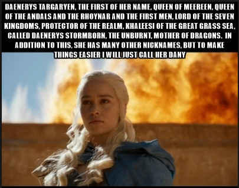
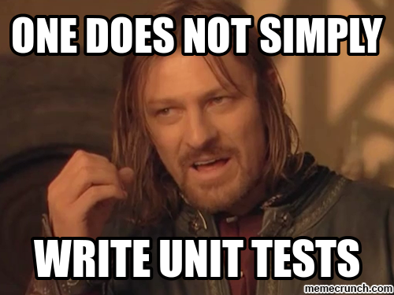

Escrevendo Menos Código(Code Smells and Refactoring)
 https://github.com/otherpirate/python-rio-niteroi-refactory
https://github.com/otherpirate/python-rio-niteroi-refactory
Niterói-RJ | 20/Agosto/2016
It's me, Mauro!
Sistemas de Informação - UFSM - 2010/2014
Engenharia de Software com enfasê em testes - UFPE - 2015
Python - 2014
Database as a Service - 2016
Por que quero falar sobre isso
- Importância dos testes
- Complexidade de manutenção
- Problemas de acompanhar a demanda
- Aprenda lendo código
"Escreva código para pessoas, não para máquinas"
Agenda
- Code Smells
- Refatoração
- Testes
- Hands on?
Code Smells

Sintomas:
- Duplicação
- Complicação
- Acoplamento
- Combinação deles
Onde passamos mais tempo?

- Escrevendo/Coding
- Procurando/Scanning
- Entendendo/Reading
Falta de intenção
- Clareza
- Buscas
- Menos é mais
- Parâmetros
Nomes, tudo tem nome

- Coisa certa, nome errado
- Código sem nome
- Muitas váriaveis
- Classes longas
Duplicação
Toda parte de
conhecimento deve ser:
- Clara
- Única
- Autoritária
Comentários
- Desodorante/Perfume
- Mas nem sempre...
Classes longas
- Responsabilidades
- Atributos
- Métodos
- Tamanho
- Coesão
- Acoplamento
Dead code
- Conhecimento
- Experiência
- Ferramentas
- Cobertura
- Complexidade
- Tempo?
Fica esperto
- Obsessão
- Muitos botões
- Condições
- Intimidade
- Exposição
Testes
"No test, no fear"
Por que testar?
- Segurança
- Revisão
- Um passo por vez
- Experimentar sem medo
Vamos testar!

- Microtest
- Unitários *
- Integração *
- Stress *
- Macaco *
- Fumaça *
- Sanidade *
- Regressão *
* Falaremos no próximo evento
Microtest
- Rápidos
- Coisas pontuais
- Poucos cenários
- Isolados
- Precisos
- Pequenos
Refatorar
"Tá tava bom, disse que ia mudar pra melhor. Não tava muito bom, tava meio ruim também, tava ruim... agora parece que piorou"
O que queremos
- Remove código duplicado
- Simplificar
- Clarificar
Melhorar o código existente, sem alterar seu comportamento.
O que não queremos

- Quebrar
- Dificultar
- Criar uma nova "feature"
Como fazer
Baby steps:
- Testados
- Curtos
- Reversíveis
- Controláveis
Fluxo
- Execute os testes
- Encontre o que alterar
- Faça uma pequena alteração
- Repeat *
Quando deve ser feito
- Vamos fazer assim
- Sprint de refactory
- Todo dia
- Teste, Teste, Teste
Estratégias

- Code review
- Refatorei sem querer
- Dividir pra conquistar
- Paralela
- Ninhos